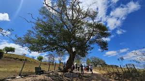
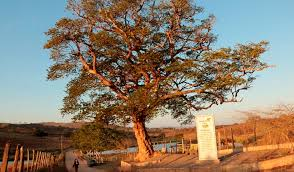

Durante sua peregrinação, no século IX, Manoel André, quando esteve em Riacho Doce, descansou à sombra de um exemplar da árvore e disse: “aquela sombra de Arapiraca seria, por ora, a sua morada”. É assim nasceu o município. O memorial tem a função de recontar a história do início da civilização do município. Este é o único exemplar de Arapiraca que possui mais de cem anos.
 